UNIONS: weak lensing in the northern sky
Calum Murray and Cail Daley
Calum's half (~15 min) of the joint talk; Cail follows with the cosmology (UNIONS-WL/talk-ade-2026). The spinning globe is the UNIONS press-release animation (July 2026; calumhrmurray.github.io/press-releases.html, assets/unions/unions_globe.mp4): the UNIONS-3500 convergence map in blue on the Gaia sky. Visualisation: Calum Murray, Cail Daley and Andreas Tersenov; sky background ESA/Gaia/DPAC.
Overview
An introduction to UNIONS · Calum
Astrophysics for cosmology within UNIONS · Calum
Cosmology from UNIONS · Cail Three parts: what UNIONS is and where it sits among the surveys; the astrophysics UNIONS does that cosmology depends on (clusters, stripping, intrinsic alignments); then Cail on the UNIONS-3500 cosmic-shear results and what comes next.
UNIONS images the northern sky from Mauna Kea
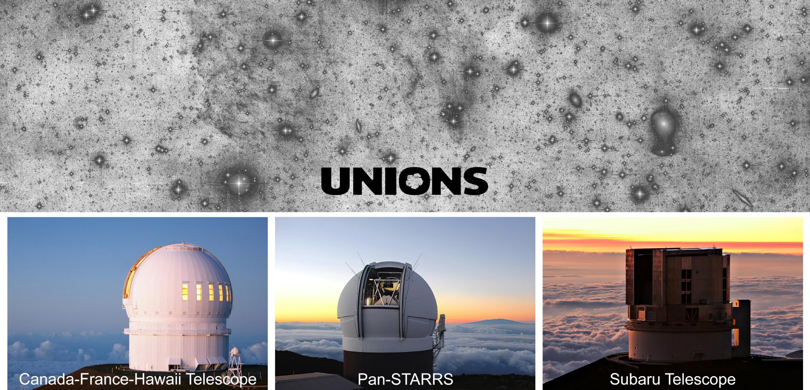
CFHT r and u, Pan-STARRS i, Subaru g and zMore than 5,000 deg² above Dec ≈ +30°
Depth comparable to LSST Year 1
Median r-band seeing 0.7″: the shapes for weak lensing
UNIONS: Gwyn et al. 2025. Figure from S. Guerrini, Moriond 2026.
UNIONS = Ultraviolet Near-Infrared Optical Northern Survey: CFIS (CFHT r, u), WISHES and WHIGS (Subaru HSC z, g), Pan-STARRS (i). The numbers on the slide are those in the joint deck's scaffold (more than 5,500 deg², LSST-Y1-like depth, median r seeing 0.7″); "more than 5,000" here, to be safe: check the exact area against Gwyn et al. 2025 before the talk.
Weak-lensing shapes are measured on the CFHT r band with ShapePipe (Guinot et al. 2022); UNIONS-3500 is the ~3,500 deg² used for Cail's cosmic shear.
Image: Sacha Guerrini's Moriond 2026 deck (sachaguer.github.io/talks/26_Moriond_UNIONS, images/unions.jpg).
The south has DES, KiDS and HSC; UNIONS covers the north
No overlap with the other Stage-III lensing surveys
A different telescope, different systematics, independent sky
Orange outline: the final UNIONS footprint. Filled: UNIONS-3500, the first shear release. Violet: Euclid DR1.
Movie, 12 s, plays once: the globe starts on the southern sky (DES, KiDS-South), swings round the equator (KiDS-North, the HSC equatorial fields) and climbs to the north, where UNIONS sits above Dec +30.
Footprints: DES Y6 round-19 outline (kadrlica/skymap); KiDS-1000 and HSC-SSP PDR3 Wide drawn as their published RA/Dec field limits, good to a degree or two; UNIONS filled = the UNIONS-3500 shear footprint (from the mass-map globe, visualisation/unions); UNIONS outline = the final footprint, the DR6 tiles (CANFAR ugriz mask_stats, 23,114 tiles, ~5,800 deg²). Note DR6 includes ~100 tiles inside DES (Stripe 82 near RA 330, and the CFHTLS-W1 area near RA 33, Dec −6): the outline shows them as small islands in the south. Euclid DR1 (violet): Cail's HEALPix map (nside 512, pixels at least half covered; euclid_dr1_nside512.fits.gz from talk-ade-2026 figures/.cache/euclid_rsd), about 2,350 deg²: a large southern area inside DES (RA ~60, Dec ~−46), a northern one around RA ~187, Dec ~+72 that lies inside the UNIONS footprint, and the Euclid Deep Field North (RA ~270, Dec ~+66). Background: Gaia EDR3 in equatorial coordinates. RA increases to the left, as on the sky. Script: scripts/globe.py movie.
Careful with "no overlap": HSC's HectoMap field (RA 200–250, Dec +42.5 to +44.5, ~100 deg²) lies inside the UNIONS footprint, as the last frame shows. Cail's "north" slide says zero overlap with HSC; agree the wording with him.
A summary of weak lensing surveys
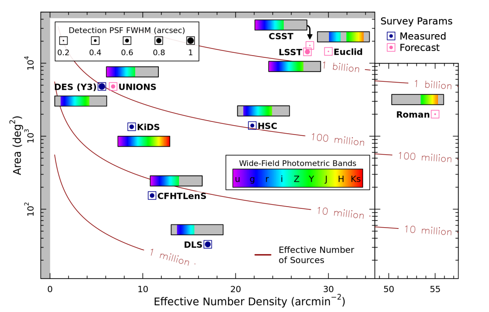
Figure: Angus Wright.
Axes — survey area against effective source density; curves of constant total number of lensing sources (1 million to 1 billion).Markers — the square's dot is the detection PSF FWHM; blue = measured, pink = forecast. Colour bars are each survey's wide-field bands.UNIONS — area comparable to DES Y3, density a little higher, $ugriz$ from CFHT, Pan-STARRS and Subaru, all in the northern sky.Stage IV — LSST, Euclid, Roman and CSST sit up and to the right; UNIONS is the large northern Stage III-scale sample before them.
UNIONS images are sharper than DES
0.71″
median r-band seeing of UNIONS, CFHT on Mauna Kea
0.95″
DES Y6 (DR2), the Blanco 4 m in Chile
Similar depth: r ≈ 24.2 (UNIONS) and 24.4 (DES) at 10σ
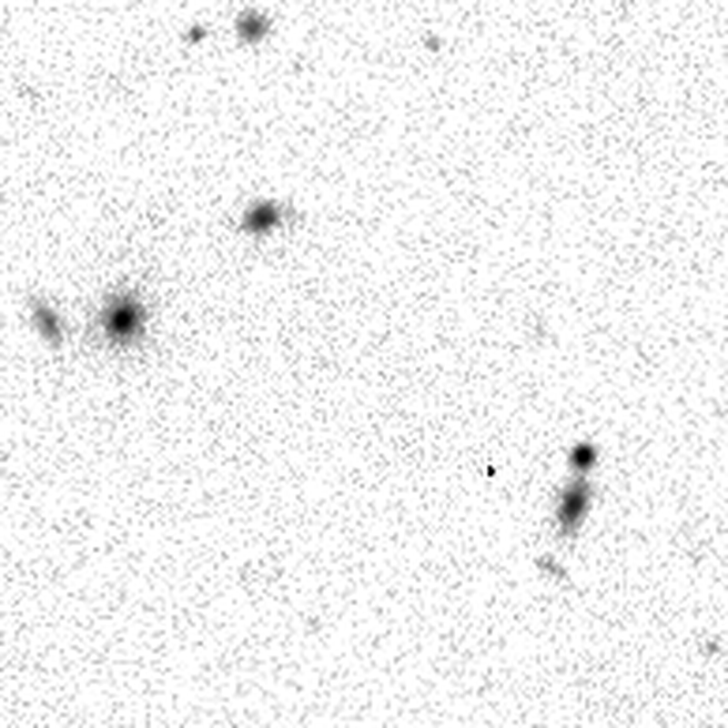
UNIONS r · 0.63″ here
DES Y6 r · 0.89″ here
The same 36″ of typical lensing sky (RA 33.59°, Dec −3.49°), where the surveys overlap; north up, fluxes matched on the stars, one stretch.
Survey medians, r band: UNIONS 0.71″ (Gwyn et al. 2025, arXiv:2503.13783; also Sacha's Moriond slide 4, "FWHM in the r-band ~0.7″ (DES ~0.98″)"); DES DR2 0.95″ median delivered PSF FWHM (DES Collaboration 2021, arXiv:2101.05765, abstract; DR2 = the six years of DES wide imaging, i.e. the Y6 images). Depths: UNIONS r 24.2 (10σ point source, 2″ aperture, Gwyn+2025 Table 3); DES DR2 r 24.4 (S/N = 10, 1.95″ aperture). So: about as deep, a third sharper.
Images (3 Nov): a blank patch of sky, centre RA 33.5895, Dec −3.4925, 36″ across, in the overlap of UNIONS DR6 with DES near the XMM-LSS field. The tile is the sharpest of the 91 UNIONS r tiles overlapping DES (IQFINAL 0.62″; the 91 range upward from there). UNIONS: tile CFIS.067.173.r (vos:cfis/tiles_DR5), 0.186″/px. DES: DR2 coadd DES0214-0333 r, 0.263″/px, via the NOIRLab Data Lab cutout service. Both north up and east left; UNIONS fluxes scaled to DES's by the median ratio over 54 matched sources (1.01); one asinh stretch. Measured stellar FWHM over the 5′ cutouts (Moffat fits): UNIONS 0.63″ (42 stars), DES 0.89″ (21 stars). This is a good UNIONS tile: the survey median is 0.71″.
What to point at: bottom right, a star and a faint galaxy just below it are two separate objects in UNIONS and run together in DES; left, the close pair is tighter. These small faint galaxies are what lensing measures. The DES background is smoother because this DES coadd is deeper (sky noise 2.5× lower here); the point is the sharpness, which is what shapes need. The few black specks in the UNIONS image are residual cosmic rays or hot pixels.
Scripts: scripts/seeing/ (pair.py, measure.py, INPUTS.txt).
The UNIONS weak-lensing group
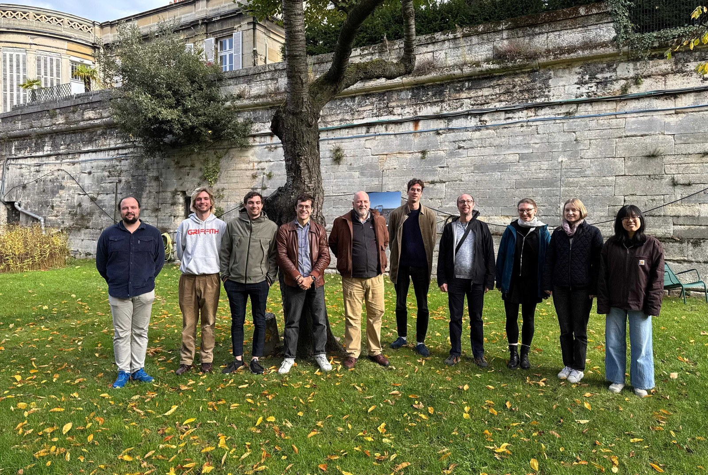
The UNIONS weak-lensing meeting in Paris.
Cosmic shear · UNIONS-3500 I–IV
L. Baumont · C. Bonini · J.-C. Cuillandre · C. Daley · T. de Boer · S. Fabbro · L. W. K. Goh · S. Guerrini · A. Guinot · F. Hervas Peters · H. Hildebrandt · M. J. Hudson · M. Kilbinger · E. Magnier · A. W. McConnachie · C. Murray · A. Paradis · A. Tersenov · L. Van Waerbeke · A. Wittje · A. H. Wright
Astrophysics in this talk
S. L. Ahad · R. Akhmetshyn · M. C. T. Campbell · A. Corinaldi · J. Elvin-Poole · F. Hervas Peters · C. T. Mpetha · R. Paviot · J. E. Taylor · and the cosmic-shear group
PHOTO: the group photo from the UNIONS meeting in Paris, taken from slide 5 of Sacha's Moriond 2026 talk (sachaguer.github.io/talks/26_Moriond_UNIONS, images/unions_team.jpg), cropped to the frame. The file carries no date; autumn leaves and a talk given in March 2026 suggest autumn 2025, so the caption gives no year: add it if you know it.
Names: the union of the author lists of UNIONS-3500 Weak Lensing I–IV (arXiv:2605.13549, 2604.03227, 2605.13547, 2605.13543), alphabetical; bold = first authors (I Hervas Peters, II Daley, III Goh, IV Guerrini). This is the group as the papers define it, not a membership list: CHECK it against the real cosmology-group roster, which I could not find written down; add or drop names before the talk.
Second line: lead authors of the papers on slides 6–13 in bold (Campbell et al. 2026, Ahad et al. 2025, Akhmetshyn et al. 2026, Hervas Peters et al. 2024, Paviot et al. 2026) plus co-authors not already above; Antonin Corinaldi for the DESI DR1 slide. Plus Sandrine Codis on the IA work if you want her named.
Publications from milkyway science -> Cosmology
Survey and data · 3 papers
Weak lensing pipelines · 7 papers
Cosmology · 7 papers
Peak counts and their systematics (Ayçoberry+22 ) Cosmology from the infall region of clusters (Mpetha+25 ) fNL from Lyman-break galaxies × Planck lensing: forecast and first measurement (Payerne+25 , +26 ) 2D cosmic shear in configuration and harmonic space (Goh+26 Guerrini+26 Lensing is low, revisited (Campbell+26 ) Clusters and voids · 7 papers
Intrinsic alignments · 3 papers
Strong lensing
Galaxy evolution
Milky Way and Local Group
UNIONS papers on arXiv as of 2 November 2026: 66. Search: the arXiv API for UNIONS, CFIS, "Canada-France Imaging Survey" or "Ultraviolet Near-Infrared Optical Northern Survey" in title or abstract (astro-ph); each abstract read, and a paper kept only if it uses UNIONS/CFIS data or is a UNIONS pipeline. This is "papers using UNIONS data", not the collaboration's own publication list: the early CFIS Milky Way papers and Mondelin+25/26 (CFHT imaging, mostly UNIONS) are included on that basis. Dropped on re-reading: Payerne+24 (LBG selection on HSC/CLAUDS degraded to UNIONS depth, no UNIONS data), Mpetha+24 (mainly a Euclid forecast), Farrens+21 (BlendHunter, CFIS-like simulations). Not included: papers that only name UNIONS (roadmaps, a footprint tool, theory follow-ups of Ursa Major III/UNIONS 1). Papers that use UNIONS without saying so in the abstract are missed.
f_NL (Constantin Payerne, two papers): 2511.22243 forecasts σ(f_NL^loc) ≈ 20–34 from UNIONS u-dropout LBGs × Planck CMB lensing (A&A 709, A70, 2026); 2607.09943 measures the LBG × Planck PR4 lensing cross-spectrum on real UNIONS data, with a first, very uncertain f_NL^loc (not yet competitive). Check the paper before quoting a number.
"Clusters and voids" also holds three galaxy-scale halo papers (Robison+22, Li+24, Cheng+25), on one line.
Survey and data (3): Ibata 2017, The Canada-France Imaging Survey: First results from the u-band component, arXiv:1708.06356; Thanjavur 2021, Photometric Cross-Calibration of the SDSS Stripe 82 Standard Stars catalogue with Gaia EDR3, and Comparison with Pan-STARRS1, DES, CFIS and GALEX catalogues, arXiv:2105.08200; Gwyn 2025, UNIONS: The Ultraviolet Near-Infrared Optical Northern Survey, arXiv:2503.13783
Weak lensing pipelines (7): Liaudat 2020, Multi-CCD Point Spread Function Modelling, arXiv:2011.09835; Guinot 2022, ShapePipe: a new shape measurement pipeline and weak-lensing application to UNIONS/CFIS data, arXiv:2204.04798; Farrens 2022, ShapePipe: A modular weak-lensing processing and analysis pipeline, arXiv:2206.14689; Zhang 2024, Point-Spread Function errors for weak lensing - density cross-correlations. Application to UNIONS, arXiv:2405.03434; Guerrini 2024, Galaxy-Point Spread Function correlations as a probe of weak-lensing systematics with UNIONS data, arXiv:2412.14666; Daley 2026, UNIONS-3500 Weak Lensing: II. B-mode validation for cosmic shear, arXiv:2604.03227; Hervas Peters 2026, UNIONS-3500 Weak Lensing: I. A Galaxy Shape Catalogue in the Northern Sky, arXiv:2605.13549
Cosmology (7): Ayçoberry 2022, UNIONS: The impact of systematic errors on weak-lensing peak counts, arXiv:2204.06280; Mpetha 2025, Cosmology from UNIONS weak lensing profiles of galaxy clusters, arXiv:2501.09147; Payerne 2025, Forecasting local Primordial Non-Gaussianities from UNIONS Lyman-Break Galaxies and Planck CMB lensing, arXiv:2511.22243; Goh 2026, UNIONS-3500 Weak Lensing: III. 2D Cosmological Constraints in Configuration Space, arXiv:2605.13547; Guerrini 2026, UNIONS-3500 Weak Lensing: IV. 2D cosmological constraints in harmonic space, arXiv:2605.13543; Campbell 2026, Revisiting the 'Lensing is Low' Problem with UNIONS, arXiv:2606.23651; Payerne 2026, Assessing the large-scale angular clustering of UNIONS Lyman Break Galaxies via cross-correlations, arXiv:2607.09943
Clusters and voids (7): Robison 2022, The shape of dark matter haloes: results from weak lensing in the Ultraviolet Near-Infrared Optical Northern Survey (UNIONS), arXiv:2209.09088; Chu 2023, A UNIONS view of the brightest central galaxies of candidate fossil groups, arXiv:2303.05146; Li 2024, Black-Hole-to-Halo Mass Relation From UNIONS Weak Lensing, arXiv:2402.10740; Cheng 2025, Unions with UNIONS: Using galaxy-galaxy lensing to probe galaxy mergers, arXiv:2502.00584; Martin 2025, Lensing the darkness: The matter density profile in cosmic voids from UNIONS, arXiv:2507.13450; Ahad 2025, Cluster properties as a function of dynamical state in the DESI Legacy x UNIONS surveys, arXiv:2512.14636; Akhmetshyn 2026, Measuring satellite galaxy subhalo masses in redMaPPer clusters with UNIONS weak lensing data, arXiv:2607.14207
Intrinsic alignments (3): Hervas Peters 2024, UNIONS: a direct measurement of intrinsic alignment with BOSS/eBOSS spectroscopy, arXiv:2412.01790; Mondelin 2026, Dissecting the Perseus-Pisces supercluster observed with CFHT-MegaCam: Exploring late-type galaxy shape alignments within the local cosmic web, arXiv:2605.23338; Paviot 2026, UNIONS: Red and blue alignments of DESI DR1 galaxies, arXiv:2610.40411
Strong lensing (4): Chan 2021, Discovery of Strongly Lensed Quasars in the Ultraviolet Near Infrared Optical Northern Survey (UNIONS), arXiv:2110.09535; Savary 2021, Strong lensing in UNIONS: Toward a pipeline from discovery to modeling, arXiv:2110.11972; Barroso 2025, Searching for strong lensing by late-type galaxies in UNIONS, arXiv:2503.10610; Storfer 2025, Gravitational Lenses in UNIONS and Euclid (GLUE) I: A Search for Strong Gravitational Lenses in UNIONS with Subaru, CFHT, and Pan-STARRS Data, arXiv:2505.05032
Galaxy evolution (20): Ellison 2019, A definitive merger-AGN connection at z~0 with CFIS: mergers have an excess of AGN and AGN hosts are more frequently disturbed, arXiv:1905.08830; Bickley 2021, Convolutional neural network identification of galaxy post-mergers in UNIONS using IllustrisTNG, arXiv:2103.09367; Roberts 2021, Ram Pressure Candidates in UNIONS, arXiv:2110.12714; Sola 2022, Characterization of Low Surface Brightness structures in annotated deep images, arXiv:2203.03973; Lim 2022, Constraints on galaxy formation from the cosmic-far-infrared-background\,$-$\,optical-imaging cross-correlation using \textit{Herschel} and UNIONS, arXiv:2203.16545; Bickley 2022, Star formation characteristics of CNN-identified post-mergers in the Ultraviolet Near Infrared Optical Northern Survey (UNIONS), arXiv:2205.14103; Wilkinson 2022, The merger fraction of post-starburst galaxies in UNIONS, arXiv:2207.04152; Ellison 2022, Galaxy mergers can rapidly shut down star formation, arXiv:2209.07613; Ferreira 2024, Galaxy Mergers in UNIONS -- I: A Simulation-driven Hybrid Deep Learning Ensemble for Pure Galaxy Merger Classification, arXiv:2407.18396; Ferreira 2024, Galaxy evolution in the post-merger regime I -- Most merger-induced in-situ stellar mass growth happens post-coalescence, arXiv:2410.06356; Ellison 2024, Galaxy evolution in the post-merger regime. II -- Post-merger quenching peaks within 500 Myr of coalescence, arXiv:2410.06357; Ellison 2024, Galaxy evolution in the post-merger regime. III -- The triggering of active galactic nuclei peaks immediately after coalescence, arXiv:2412.02804; Foster 2025, No Evidence of Asymmetrically Enhanced Star Formation in Infalling Galaxies in UNIONS, arXiv:2502.13123; Sola 2025, Low Surface Brightness structures from annotated deep CFHT images: effects of the host galaxy's properties and environment, arXiv:2503.18480; Yoshida 2025, Dust-obscured Galaxies with Broken Power-law Spectral Energy Distributions Discovered by UNIONS, arXiv:2504.15023; Heesters 2025, Galaxies OBserved as Low-luminosity Identified Nebulae (GOBLIN): a catalog of 43,000 high-probability dwarf galaxy candidates in the UNIONS survey, arXiv:2505.18307; Zhong 2025, UNIONS Optical Identifications for VLASS Radio Sources in the Euclid Sky (UNVEIL) I. A Catalog of ~146,000 Radio Galaxies up to z~5, arXiv:2507.08604; Mondelin 2025, Dissecting the Perseus-Pisces supercluster observed with CFHT-MegaCam: Investigating environmental effects on galaxy morphology, arXiv:2511.05925; Ferreira 2026, Galaxy Mergers in UNIONS -- II: Predicting Timescales in the Post-Merger Regime, arXiv:2601.07604; Chang 2026, Merger Driven or Internal Evolution? A New Morphological Study of Tidal Disruption Event Host Galaxies, arXiv:2602.06839
Milky Way and Local Group (15): Ibata 2017, Chemical Mapping of the Milky Way With The Canada-France Imaging Survey: A Non-parametric Metallicity-Distance Decomposition of the Galaxy, arXiv:1708.06359; Thomas 2018, A-type stars in the Canada-France Imaging Survey I. The stellar halo of the Milky Way traced to large radius by blue horizontal branch stars, arXiv:1809.08245; Thomas 2018, A-type stars in the Canada-France Imaging Survey II. Tracing the height of the disc at large distances with Blue Stragglers, arXiv:1810.09461; Thomas 2019, Dwarfs or giants? Stellar metallicities and distances in the Canada-France-Imaging-Survey from $ugrizG$ multi-band photometry, arXiv:1910.03076; Fantin 2019, The Canada-France Imaging Survey: Reconstructing the Milky Way Star Formation History from its White Dwarf Population, arXiv:1911.02576; Thomas 2020, The hidden past of M92: Detection and characterization of a newly formed 17° long stellar stream using the Canada-France Imaging Survey, arXiv:2009.04487; Fantin 2021, The Mass and Age Distribution of Halo White Dwarfs in the Canada-France Imaging Survey, arXiv:2103.14721; Jensen 2021, Uncovering fossils of the distant Milky Way with UNIONS: NGC 5466 and its stellar stream, arXiv:2108.04340; Smith 2022, Discovery of a new Local Group Dwarf Galaxy Candidate in UNIONS: Boötes V, arXiv:2209.08242; Smith 2023, The discovery of the faintest known Milky Way satellite using UNIONS, arXiv:2311.10147; Errani 2023, Ursa Major III/UNIONS 1: the darkest galaxy ever discovered?, arXiv:2311.10134; Crnogorčević 2023, Strong Constraints on Dark Matter Annihilation in Ursa Major III/UNIONS 1, arXiv:2311.14611; Smith 2025, Deep in the Fields of the Andromeda Halo: Discovery of the Pegasus VII dwarf galaxy in UNIONS, arXiv:2502.09792; Bayer 2025, A Pristine-UNIONS view on the Galaxy: Kinematics of the distant spur feature of the Sagittarius stream traced by Blue Horizontal Branch stars, arXiv:2502.17319; Cerny 2025, No Observational Evidence for Dark Matter Nor a Large Metallicity Spread in the Extreme Milky Way Satellite Ursa Major III / UNIONS 1, arXiv:2510.02431
We can probe the matter distributions in clusters with lensing
Evolved
Evolving
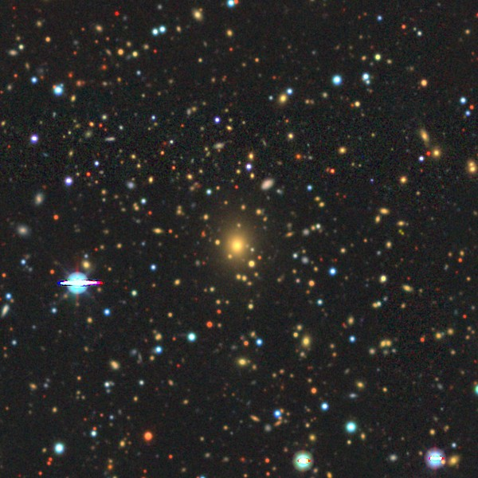
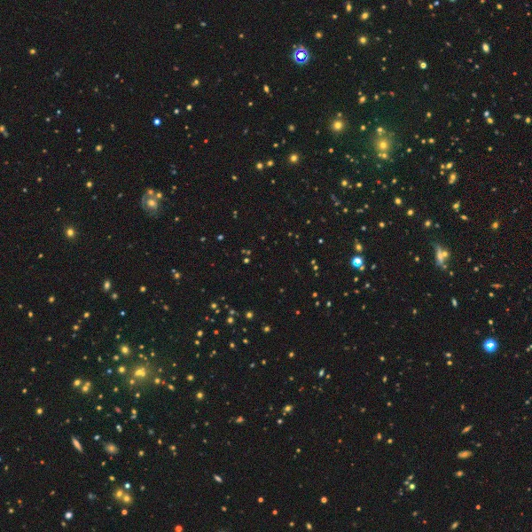
Abell 2261, z = 0.22: one dominant galaxy, a large magnitude gap
Abell 1758N, z = 0.28: several bright galaxies, a small gap
fix this please
Done: when the boxes and images moved right, the EVOLVED / EVOLVING labels and the two captions stayed behind; they now sit centred in their boxes again.
Thread for the science section (from the 2 Nov run-through): this is a cosmology and dark-energy meeting, so frame the highlights as one story — how galaxies and clusters evolve over cosmic time, which cosmology has to understand to use them. Each topic is physics, then the UNIONS result. The common agent is the tide: assembly history sets a cluster's centre (here); the cluster's tide strips satellites, taking dark matter but leaving the stellar shape, so shapes are set early (stripping); the large-scale tide aligns galaxies as they form (IA). Alignment sign follows the tidal shear, δ̄(<r) − δ(r), the same combination as lensing's ΔΣ: radial around excess mass, tangential inside deficits (cf. Pauline's FLAMINGO voids talk this morning). Say the pattern aloud once here.
The set-up for Ahad et al. Dynamical friction is strongest on the most massive satellites, so they sink to the centre first and merge with the brightest cluster galaxy (BCG). A cluster that assembled early has had time for this: one dominant BCG, a large gap in magnitude to the next-brightest galaxy (the "fossil group" limit is Δm₁₂ > 2 mag in r). A cluster still assembling, with recent mergers, keeps several bright galaxies of similar luminosity and a small gap.
Earlier formation also means a more concentrated halo, which is what lensing can test without relying on the light. Ahad et al. select on the magnitude gap between the BCG and the brightest satellite, and on the stellar-mass ratio of the BCG to the third most massive satellite (next slide, left).
Drawing: schematic, made for this deck.
The images (Legacy Surveys DR9 grz, fig/clusters/): left, Abell 2261 (z = 0.225, RA 260.613, Dec +32.134; NED), relaxed, with one of the largest BCGs known; the field is 5.5′ ≈ 1.2 Mpc. Right, Abell 1758N (z = 0.278, RA 203.188, Dec +50.542; NED), the northern half of a double cluster, itself a merger of two subclusters, each with its own bright galaxies; 4.75′ ≈ 1.2 Mpc. These are well-known illustrations chosen for this slide, not clusters from Ahad et al.; say so if asked. The faint green haze in the right image is a Legacy Surveys sky-subtraction artefact, not the cluster.
Evolved clusters and evolving clusters have different mass distributions
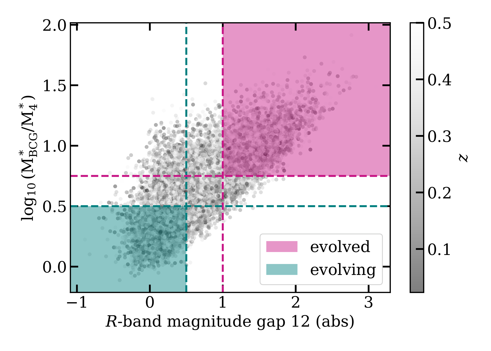
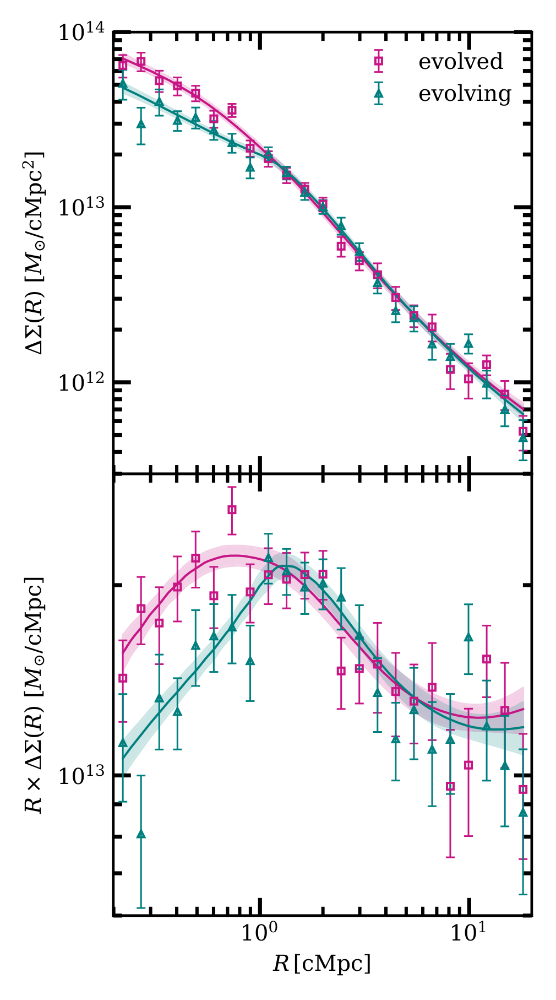
DESI Legacy clusters, UNIONS shear measurements
Evolved : one dominant central galaxy; more mass in the coreEvolving : bright satellites, flatter centreWith TNG simulations we see that each group has a different accretion history
Ahad et al. 2025, "Cluster properties as a function of dynamical state in the DESI Legacy × UNIONS surveys", arXiv:2512.14636. Left: their Fig. 1 (selection: r-band magnitude gap between the BCG and the brightest satellite against the log stellar-mass ratio of the BCG to the third most massive satellite). Right: their Fig. 8 (ΔΣ of the stacks).
Clusters photometrically selected from the DESI Legacy Imaging Surveys, crossed with the UNIONS shear catalogue. Beyond 1 Mpc the two profiles agree in amplitude; within 1 Mpc evolved clusters are significantly more concentrated. Evolved: bimodal stellar mass functions dominated by massive BCGs, a deficit of intermediate satellites; evolving: an excess of massive satellites. Mean halo mass ~10^14 and z ~ 0.33 in both.
The cluster tidal field strips dark matter
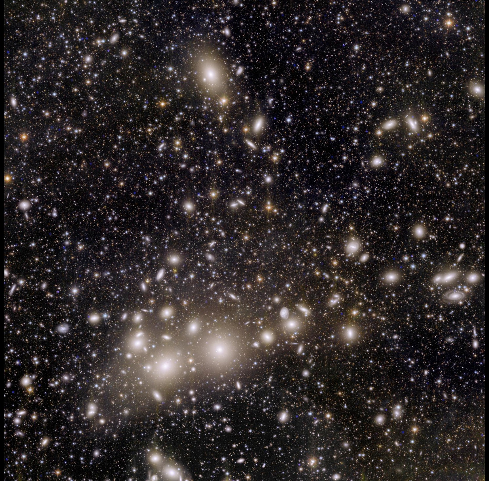
As a galaxy falls into a cluster Tidal interactions are expected to strip dark matter Stars are less effected, since they are deeper in the galaxy
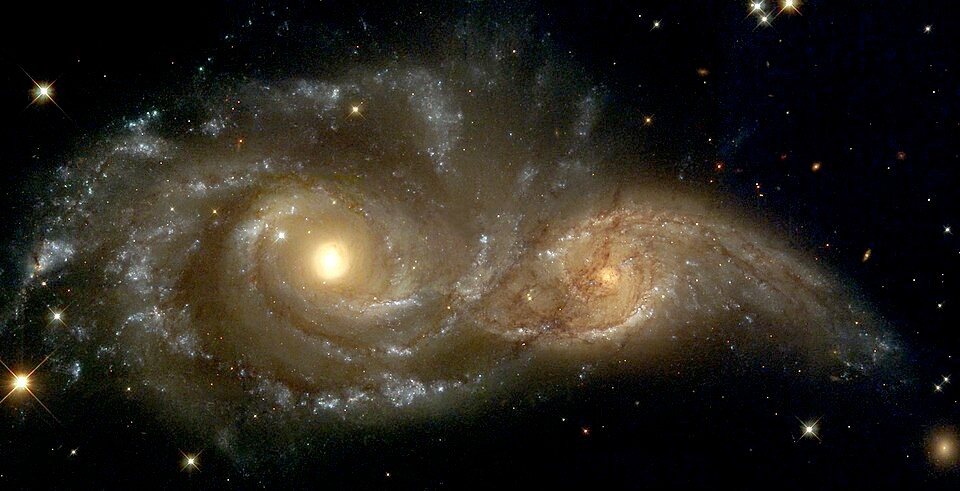
Stripping, seen: NGC 2207 pulls a tail out of IC 2163. Left: Perseus (Euclid); dashed, each satellite's halo, shrinking towards the centre.
make this text bigger please
Done: the three bullets are now 30 px (from about 22), with more space between them.
The physics behind the next slide. A satellite orbiting inside a cluster feels the difference between the cluster's pull on its near and far sides. Beyond the tidal (Jacobi) radius that difference beats the satellite's own gravity, and the material there is lost, leading and trailing along the orbit.
The formula on the slide is the point-mass, circular-orbit Jacobi radius (Binney & Tremaine §8.3). For an extended host it becomes r_t = r [m_sub / ((3 − dlnM/dlnr) M(<r))]^(1/3) (King 1962). For any host whose enclosed mass grows more slowly than r³, which is every real halo, r_t shrinks as the satellite goes deeper.
Dark-matter halos extend ~10× further than the stellar body, so stripping removes dark matter long before it touches the stars: the subhalo-to-stellar mass ratio falls towards the cluster centre. Simulations show subhalos losing most of their mass after a few pericentres while keeping their stars (e.g. Peñarrubia et al. 2008; Smith et al. 2016).
Drawing: schematic, made for this deck; sizes not to scale.
Images: left, the Perseus cluster from the Euclid Early Release Observations (ESA/Euclid/Euclid Consortium/NASA; image processing J.-C. Cuillandre, G. Anselmi; CC BY-SA 3.0 IGO), with Calum's rings and satellites from his IAP seminar (17 February 2026, pages 28–29), redrawn so that each satellite's dark-matter halo (dashed) shrinks with its tidal radius, r_t ∝ r for a fixed mass ratio: the stars (orange) stay the same. Right, NGC 2207 tidally stripping IC 2163 (NASA/ESA and the Hubble Heritage Team, STScI), seminar page 27. The measurement is the next slide, Roman Akhmetshyn's.
Satellites lose their dark matter as they fall into clusters
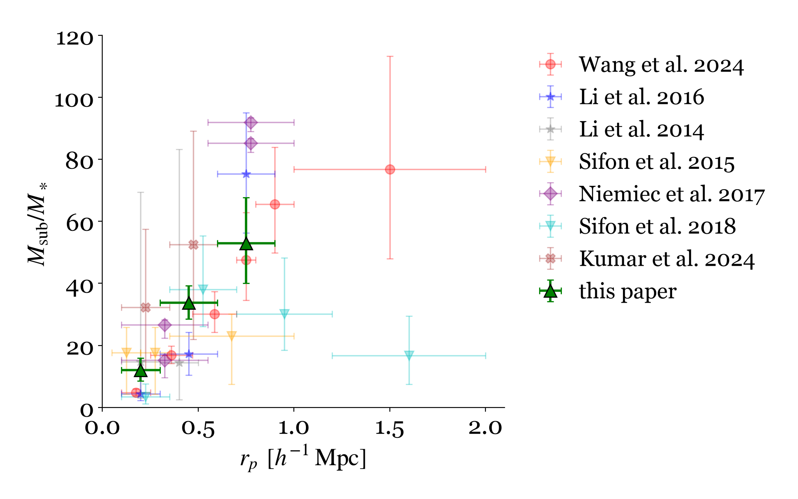
Stellar mass to dark matter mass decreases in cluster centres Observational evidence of the tidal stripping of galaxies
Akhmetshyn et al. 2026, "Measuring satellite galaxy subhalo masses in redMaPPer clusters with UNIONS weak lensing data", arXiv:2607.14207. Figure: their SMHM_comp_updated redrawn (talks/2611_ADE_Paris_Calum/scripts/stripping_smhm.py) from the points in the arXiv PDF, with wider axes so no error bar is cut (Wang et al. 2024 reaches 113 at 1.5 Mpc) and the legend moved off the data. Left: redrawn for this deck as inline SVG from their halo_demo.png (fig/stripping_demo.png, a Monte-Carlo host-halo term around a satellite at distance r): the lensing around each satellite, measured in annuli centred on it, is the sum of the stars (point mass), the truncated subhalo and the host halo, offset by r. Right: SMHM_comp_updated (M_sub/M★ against cluster-centric distance, green = this paper, others = earlier measurements with CS82, KiDS, DECaLS, CFHTLenS, HSC).
Data: redMaPPer SDSS DR8 clusters and members × UNIONS ShapePipe v1.3 sources, dsigma. Satellites with P_mem > 0.8 in three bins: 204,000 / 106,586 / 18,865. Best fit M_sub/M★: 12.0 (+3.9 −3.3) at 0.14–0.43 Mpc, 33.7 (+5.5 −5.2) at 0.43–0.86 Mpc; the third bin (0.86–1.23 Mpc) is ~50 on the figure, read off it, not from their table, which was cut in the source I read. Model: stellar + subhalo + offset host-halo terms, BCG miscentring as a Rayleigh distribution.
Reading: the subhalo-to-stellar mass ratio grows with cluster-centric distance, as tidal stripping predicts. Their own caveat: the simple model fits near the satellite but not the larger distances where the host halo dominates.
Every galaxy forms inside the large-scale tidal field
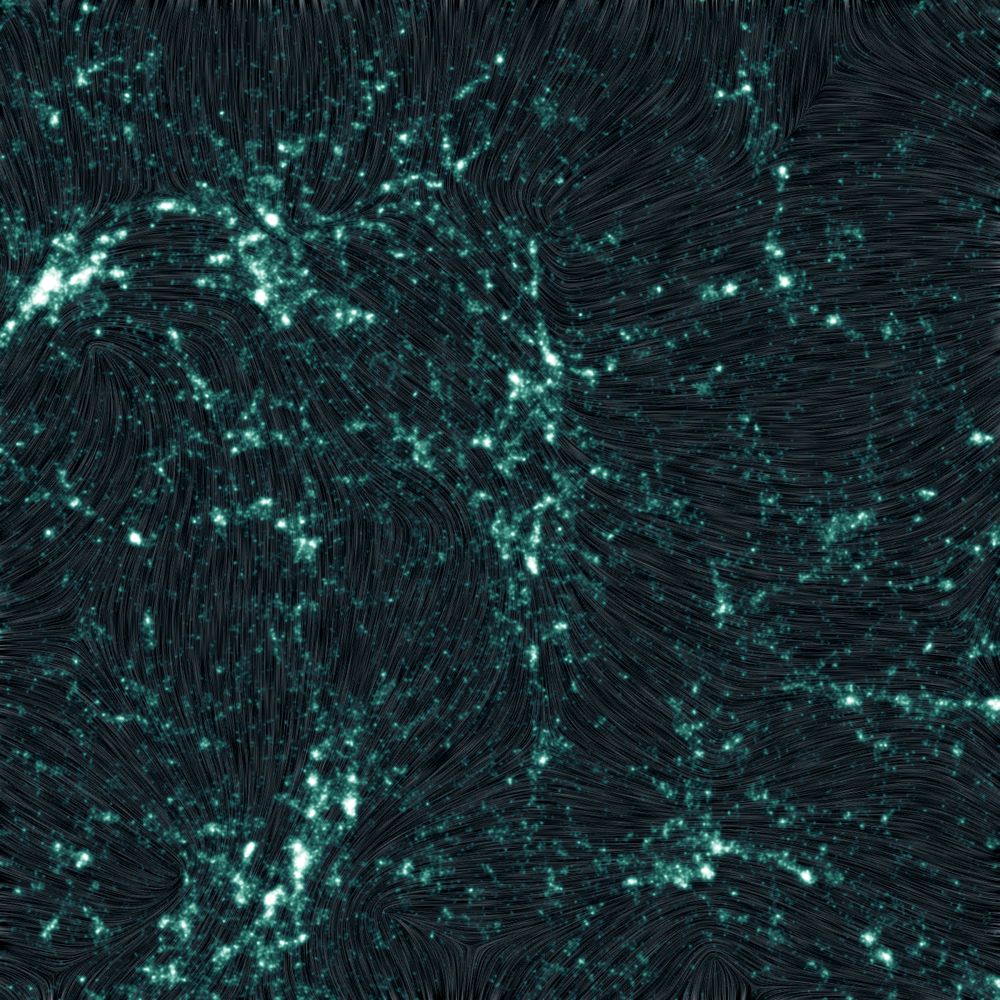
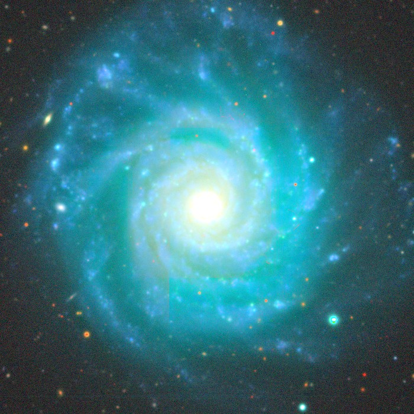
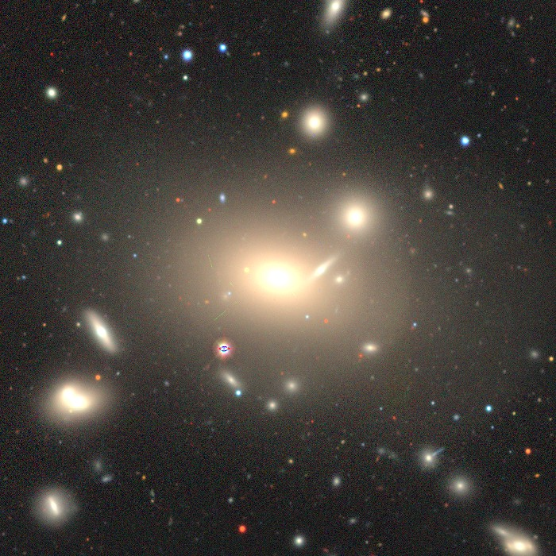
Spiral · NGC 3938
Elliptical · NGC 4889
Images: SDSS (spiral), DESI Legacy Imaging Surveys DR9 (elliptical)
Different galaxy types form in very different way They are expected to obtain their intrinsic alignment signal during formation
We should expect intrinsic alignment to depend upon galaxy type
SPHEREx × Legacy Surveys, 0.07 < z < 0.10; lines: the tide; galaxies sketched.
Left (2 Nov, final): real data, not a simulation or sketch. Drawn in matplotlib's Blues: dark blue = dense, white = empty; navy lines = the tide. LSx v0.9 quality galaxies (Legacy Surveys positions, redshifts from SPHEREx alone) with 0.07 < z < 0.10, the first shell of the SPHEREx movie, in a 12° × 12° gnomonic patch centred on RA 206°, Dec +22°: 8,034 galaxies (blue-to-white colour map). Brightness: their density (log stretch; the mean sinks into the ground, so filaments and knots glow). Lines: the stretching axis of the tidal field of the same galaxies' density, smoothed by 1.1° and projected over the shell (Poisson solve by FFT), drawn as a few white streamlines. Over it, sketched galaxies (not real ones): red ellipticals on the densest knots, stretched along the tide (linear alignment), blue discs in the filaments at random angles. Projected and preliminary: an illustration of the tide around real structure, not a measurement. Script: talks/2611_ADE_Paris_Calum/scripts/spherex_web_tide.py (input nibi /scratch/cmurray/slides_2611/shell_006_011.npz). The earlier simulated and sketched versions are fig/tidal_field_sim.png and fig/tidal_field_large.png; the older note text below describes those.
Left (2 Nov): a small simulation, not a sketch (talks/2611_ADE_Paris_Calum/scripts/tidal_sim.py): a 2D Zel'dovich run, 768² particles displaced by the gradient of one Gaussian random potential to just past shell crossing, so filaments, knots and voids form; density by cloud-in-cell, log stretch. The tide is the stretching axis of the same potential on large scales, drawn faintly (line-integral convolution), mostly visible in the voids. Red ellipticals on the densest knots, stretched along the tide; blue spirals in the filaments at random angles. Illustrative: 2D, no gravity beyond the first-order displacement.
Opening the IA section. Left: a schematic made for this deck (scripts/tidal_field.py): a 2D Gaussian random field as the density, its potential from the Poisson equation, and the tidal tensor's stretching axis drawn as a line-integral-convolution texture. Galaxies sit on the density peaks: ellipticals (red) stretched along the local tide, so radially towards the overdensities, spirals (blue) at random angles. Not a simulation; the point is the picture, the tide coherent over tens of Mpc.
Right: two real galaxies. The spiral is the SDSS gri image (the Legacy Surveys grz version saturated to cyan on this bright disc); the elliptical is Legacy Surveys DR9 grz. NGC 3938, a face-on Sc spiral in Ursa Major (z = 0.0027, ~5′ across); NGC 4889, the giant elliptical at the centre of the Coma cluster (z = 0.0215), with smaller Coma members around it. Both in the UNIONS north.
The next slides: ellipticals first (linear alignment), then what the real tide looks like in CMASS.
Aligned galaxies lower the lensing signal
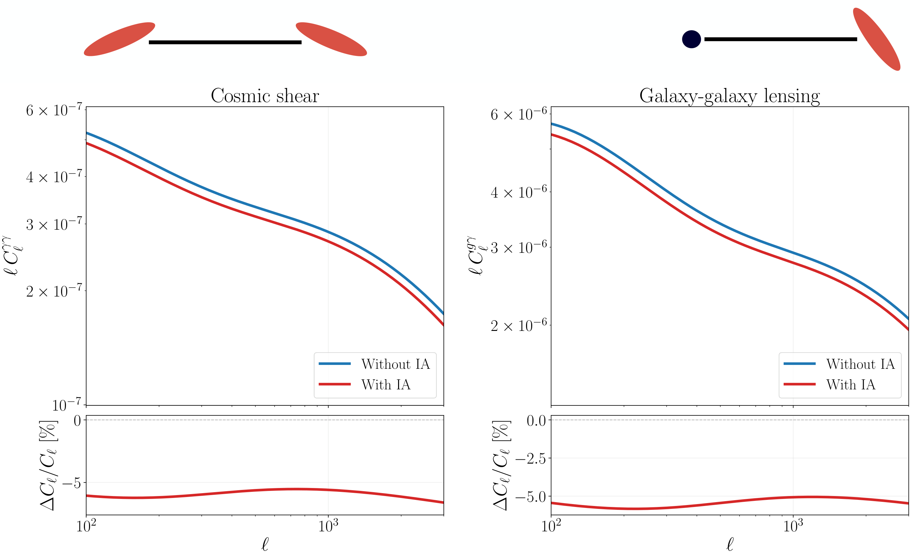
Lensing makes background shapes tangential around mass
Radially aligned galaxies cancel part of it
Here about 5% of the lensing power, at every scale
Cosmic shear marginalises over AIA , so its prior matters (Cail)
IA in UNIONS
Moriond page 13. Left: cosmic shear (two shapes); right: galaxy-galaxy lensing (a position and a shape); blue without IA, red with; lower panels the fractional change, about −5 to −6% at all multipoles for the configuration in that figure. Check with Calum which A_IA and n(z) the figure assumed before quoting a number beyond "about five per cent".
A few per cent at every scale is degenerate with the amplitude of the lensing signal, so with S8. Cosmic-shear analyses fit A_IA (and its redshift and luminosity dependence) along with cosmology; a prior from direct measurements, like the next four slides, tightens S8.
UNIONS measures intrinsic alignments directly
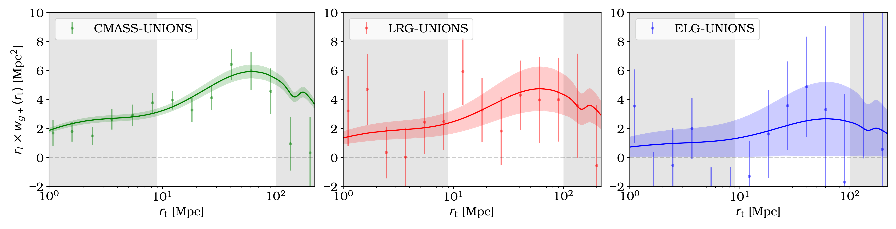
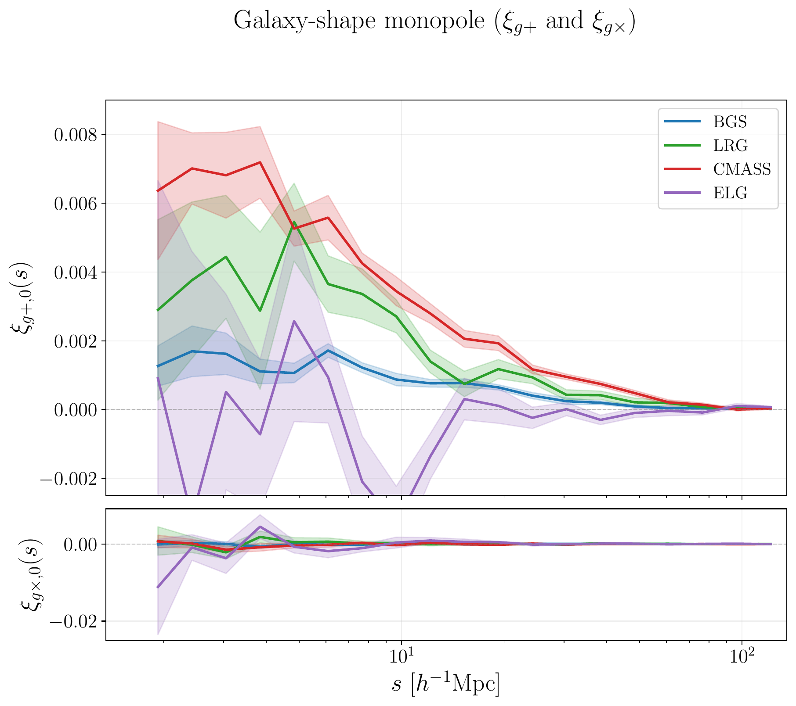
BGS
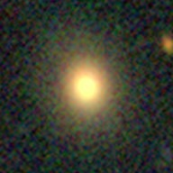
LRG
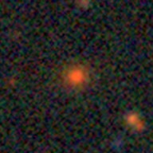
ELG
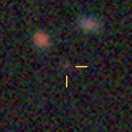
Radial red galaxies Tangential discs this figure should be bigger somehow. top panel can get smaller if needed
Done: the top row is smaller (860 px wide instead of 1000) and the monopole bigger (400 px wide instead of 330, about 50% more area); stamps and the radial/tangential sketch moved to fit beside it.
Fabian Hervas Peters et al. 2024, "UNIONS: a direct measurement of intrinsic alignment with BOSS/eBOSS spectroscopy", arXiv:2412.01790. Top: their WGP_all (r_t w_g+ for CMASS-, LRG- and ELG-UNIONS, best-fit NLA, grey = outside the fit). Bottom left: Full_lum (A_IA against luminosity across surveys, CMASS-DES and CMASS-UNIONS scaling alike).
The third bullet follows Sacha's Moriond slide ("direct measurement used in the cosmological analysis, see Cail's talk"). Check with Cail how exactly the UNIONS-3500 IA prior used it before saying so; his slide 13 at Moriond showed S8 sensitive to the IA prior, a natural hand-off.
Lineage for the next three slides: Fabian → Antonin (DESI DR1, every galaxy type); Romain → Calum (blue galaxies).
Red galaxies align radially; massive blue ones tangentially
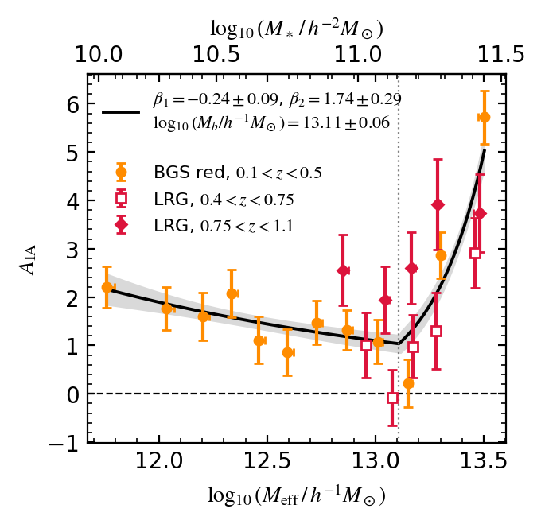
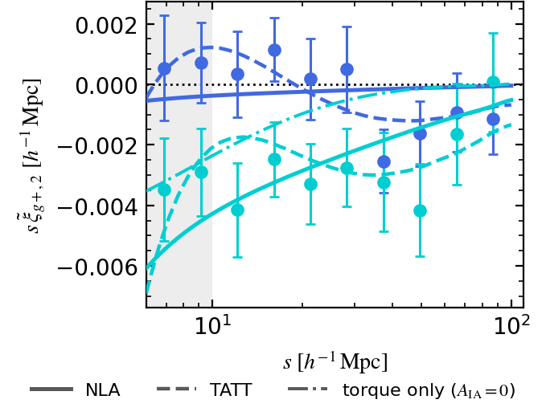
BGS · blue
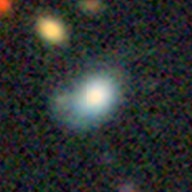
● low M★ ● high M★
Radial red galaxies Tangential discs Paviot et al. 2026, "UNIONS: Red and blue alignments of DESI DR1 galaxies", arXiv:2610.40411 (29 October 2026; Paviot, Murray, Kilbinger, Daley, Hervas Peters, Corinaldi, et al.). Public now, so the earlier "ask Romain first" no longer applies; still worth telling him it is shown. Figures are the arXiv versions (results/fig3_aia_vs_mass_red.png, fig6_aia_vs_mass_blue.png of the source).
Data: DESI DR1 BGS, LRG and ELG × UNIONS shapes, 2,400 deg² for BGS and 1,200–1,250 deg² for LRG and ELG. Fits: the clustering monopole and the galaxy-shape quadrupole of ξ(s, μ) jointly, NLA; w_g+ as a check.
Left, red: A_IA against an effective halo mass from a CSMF fitted to the BGS red galaxy-galaxy lensing. A single power law fails (χ² 96.8/20); a broken one fits (32.3/18): β₁ = −0.24 ± 0.09 below M_b = 1.3 × 10¹³ h⁻¹ M☉ (log 13.11 ± 0.06), β₂ = 1.74 ± 0.29 above. Below the break A_IA ≈ 1–2, nearly flat: a single power law extrapolated to faint sources mispredicts it both ways. Partly in tension with Fortuna et al. 2025 (KiDS LRGs) over the common mass range.
Right, blue: BGS blue global A_IA = −0.29 ± 0.11 (2.6σ); low-mass half −0.05 ± 0.11; high-mass half (log M★ ≈ 10.7) −0.59 ± 0.18, 3.3σ (2.2σ model-independent), "to our knowledge the most significant detection of a non-zero alignment of blue galaxies to date". ELG: −0.37 ± 0.53, −1.4 < A_IA < 0.7 at 2σ. TATT is not favoured over NLA; the tangential signal is carried by the tidal-alignment term, not tidal torquing.
Negative A_IA = tangential alignment, the opposite sign to red galaxies.
Right panel (3 Nov): r_p w_g+ for BGS blue in the two stellar-mass halves, plotted from Romain's files (candide:/n09data/rpaviot/DESIxUnions/correlations_xi2coarse/BGS, the run that matches his Fig. 4 bottom panel point for point), sign flipped so positive = radial; errors from the jackknife covariance. Script: talks/2611_ADE_Paris_Calum/scripts/ia_paviot_wgp.py.
SPHEREx redshifts trace the cosmic web over the whole sky
Legacy Surveys positions, redshifts from SPHEREx alone (LSx, preliminary), z = 0.07 to 0.37. Orange: the UNIONS footprint.
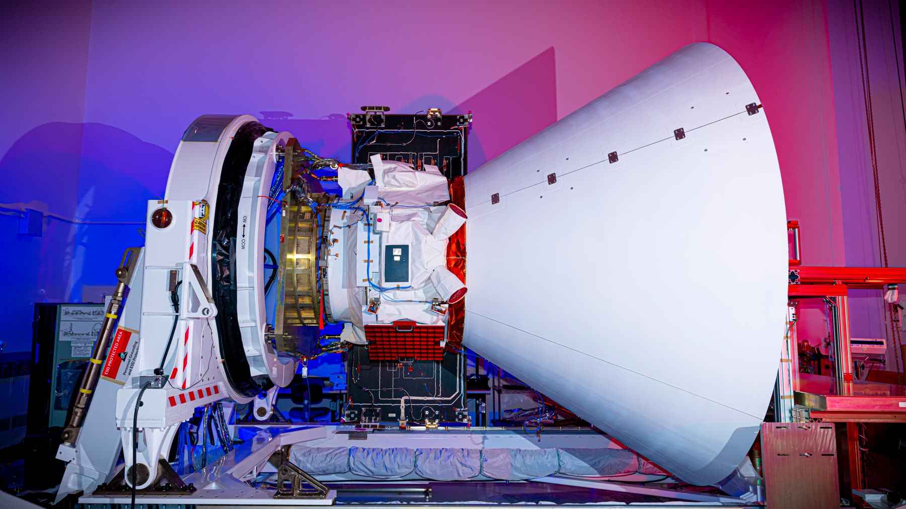
Calum Murray SPHEREx × Legacy Surveys
The LSx v0.9 sky movie from calumhrmurray.github.io/spherex-sky.html (assets/spherex/allsky_redshift_oldstyle.mp4, 37.6 s, 29 MB): shells climb from 0.07 < z < 0.10 to z = 0.37 in ~14 s, then sweep down and up; it loops here. Orange: the final UNIONS footprint (DR6 tiles), drawn in the movie's projection (scripts/spherex_unions_overlay.py). Each point is a Legacy Surveys galaxy with a redshift from its SPHEREx spectrum alone, no optical bands in the fit; this shell holds 1,096,235 galaxies.
This catalogue is what the next slide uses: Legacy Surveys shapes, positions with SPHEREx redshifts, over the whole extragalactic sky rather than the UNIONS footprint.
Preliminary: the catalogue report says no number from it may be quoted as a release number. Against DESI and other spectroscopic surveys, σ_NMAD runs from 0.005 at r ≈ 16 to 0.013 at r ≈ 20.5 with a few per cent outliers at the faint end (final_v2 report, §5.2); say "about one per cent" if asked.
Radial red galaxies and Tangential blue discs!
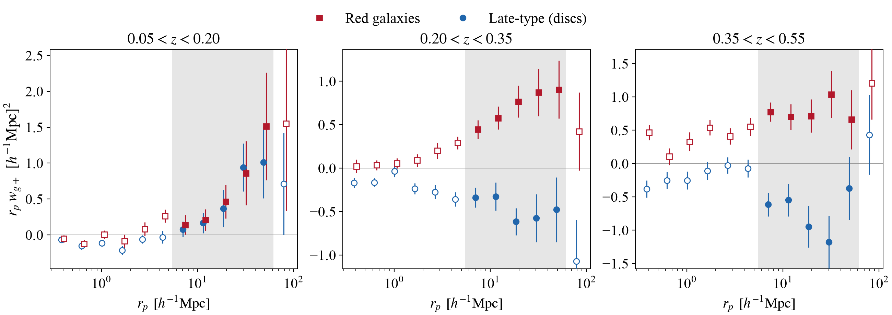
Radial red galaxies Tangential discs UNIONS shapes, SPHEREx redshifts
Figure (2 Nov, one row): r_p w_g+ with UNIONS shapes in the three redshift bins, both samples per panel (two-row version with the cross component: fig/ia_unions_types.png), drawn like the paper's type figure (wgp_types): late-type galaxies (morphology class; discs of all colours, blue circles) and red galaxies (colour class; 70–90% spheroids, red squares). These are the closest samples measured with UNIONS shapes, not the paper's blue-disc / red-spheroid cuts. Filled points: the 6–70 h⁻¹ Mpc window of the amplitude (grey band); grey: the cross component w_g×, consistent with zero. Data: Nibi /scratch/cmurray/ia_results/probes/unions (wgp_sys.py --tests unions, 23 Oct), matched samples, 40-patch jackknife errors; script talks/2611_ADE_Paris_Calum/scripts/ia_unions_types.py. The lowest bin: late-type galaxies are null or slightly radial, as the paper finds for discs at z < 0.2.
Data: UNIONS ShapePipe v1.6 metacal shapes (comprehensive catalogue, ngmix flags = 0, v1.6.9 masks) matched within 1″ to the LSx v0.9 galaxies, whose positions and redshifts come from SPHEREx: 4,258,993 matched shape galaxies over the 5,559 deg² overlap; density tracers are all LSx galaxies of the z bin; 40 jackknife patches. Nibi: ~/intrinsic_alignments/docs/unions_overlap.md and docs/figures/unions/wgp_unions.json (src/probes/unions_figs.py, 2026-10-23). Figure redrawn for this deck from that JSON (scratch script, matched samples only).
Left, 0.20 < z < 0.35: r_p w_g+ with UNIONS shapes for red (colour), late-type (morphology, all colours) and late-type in the top mass bin (median log M★ = 11.1). Grey band: the 6–70 h⁻¹ Mpc fitting range. Right: the amplitude A = GLS-weighted mean of r_p w_g+ over 6–70 h⁻¹ Mpc, jackknife errors.
Numbers (A, UNIONS shapes): late-type −0.41 ± 0.10 (z 0.20–0.35), −0.59 ± 0.16 (0.35–0.55), +0.12 ± 0.10 (0.05–0.20); late-type log M★ ≈ 11: −0.99 ± 0.21; blue −0.16 ± 0.08, −0.30 ± 0.14, +0.25 ± 0.10; red +0.17 ± 0.11, +0.56 ± 0.09, +0.76 ± 0.12. Positive = radial. w_g× consistent with zero everywhere.
The point of this slide: on identical galaxies the UNIONS and Legacy Surveys (Tractor) amplitudes agree for blue and late-type to |ΔA| ≤ 0.10 (paired jackknife), so the tangential disc signal is in the galaxies, not the shape measurement. Red and early-type are 20–40% weaker with UNIONS shapes (z1 red ΔA = −0.23 ± 0.02) with the same sign; cutout tests rule out radial weighting and Tractor misfits, so it is a survey/estimator difference still being understood. Don't quote a red amplitude as "the" value.
Not the same split as the paper: "late-type" here is the morphology class of the pipeline (iacorr.py), not the paper's blue-disc cut (blue AND Sérsic n < 1.5); significances in the paper are for the full Legacy Surveys footprint. The previous Legacy-shapes figure is fig/ia_blue_discs_wgp.png if wanted as backup.
Cosmic shear benefits from independent measurements
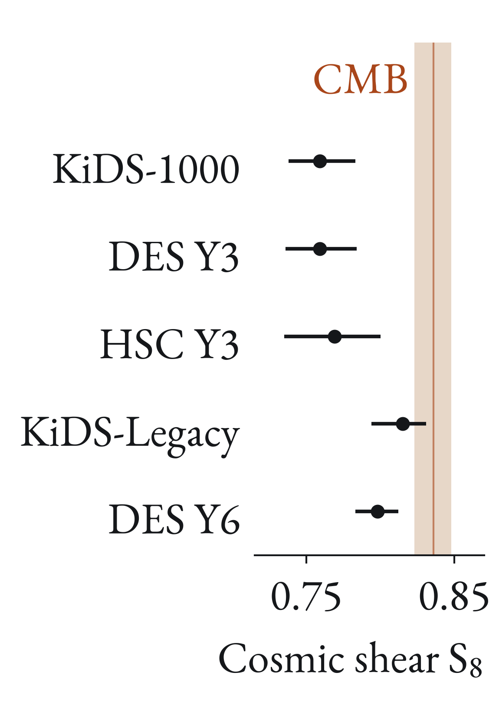
$S_8$ seems to be converging as systematics improve; consensus is important!
UNIONS non-tomographic shear release
Paper I : shape catalog (Hervas-Peters et al.)Paper II : B-mode validation (Daley et al.)Paper III : real-space constraints (Goh et al.)Paper IV : harmonic-space constraints (Guerrini et al.)
Paper I: a shape catalog of 61 million galaxies in the northern sky
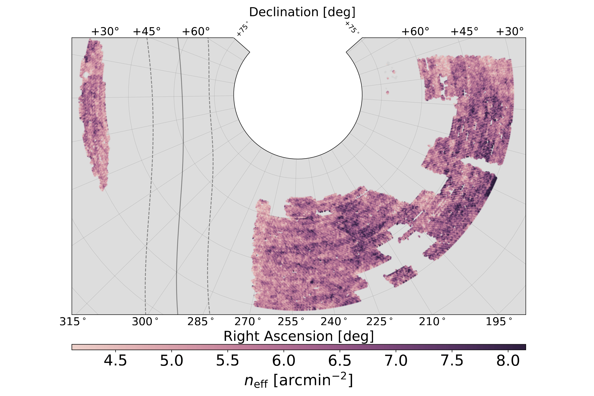
Area
Effective number density
Shape noise
Catalog to be published on acceptance
Paper II: B-modes are mitigated by cutting CCD- and large-scales
All scales
Fiducial scale cuts
● real space □ harmonic space
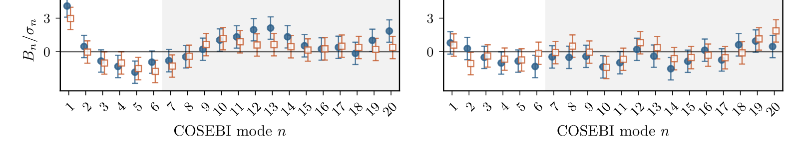
Suggestive of repeating CCD-scale additive bias
$\xi_\pm^B$, $C_\ell^{BB}$ and $B_n$ do not always agree,
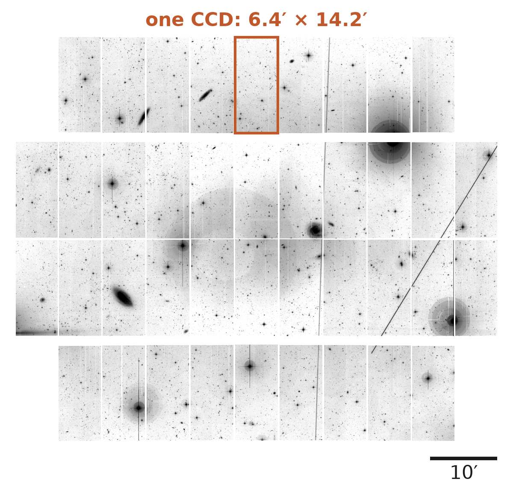
One MegaCam exposure: 40 CCDs, each 6.4′ × 14.2′
Paper II — B-mode validation (Daley et al.): the gatekeeper that chose the catalog version and the scale cuts.Bottom row — the paper figure's $B_n/\sigma_n$ row ($E_n$ row cropped off). Shaded: modes $n > 6$; the cosmological information sits at $n \le 6$. Left — over all scales ($1$–$250'$) COSEBIs fail: the oscillating $B_n$ pattern that Asgari et al. 2019 associated with repeating additive shear bias at the CCD scale. Config- and harmonic-space COSEBIs agree, so it is the filter weighting, not the basis.Right — with the fiducial cuts, $[12, 83]'$ and $\ell = 300$–$1600$, the B-modes are consistent with zero; all PTEs $> 0.18$.Three statistics — over the full range $\xi_\pm^B$ and $C_\ell^{BB}$ pass while COSEBIs fail; each weights scales differently, so we require all three to pass. We could not decisively identify the origin.
Sources Paper II (Daley et al. 2026), Figures/harmonic_config_cosebis_full.pdf (E_n top, B_n/σ_n bottom). Same B_n as the Moriond slide 10; since the referee round modes n > 6 are shaded, the cosmological information sitting at n ≤ 6.
Paper III: cosmology and PSF leakage are fit jointly in real space
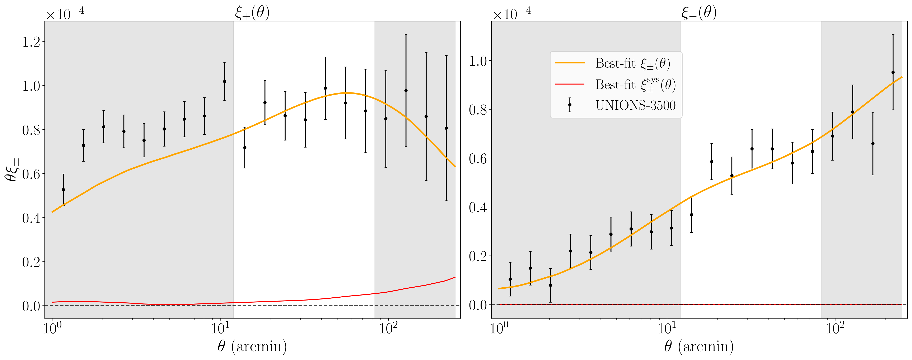
Paper IV: harmonic space gives a higher $S_8$
Same catalog, $n(z)$ and blinding, but different basis and weighting of scales
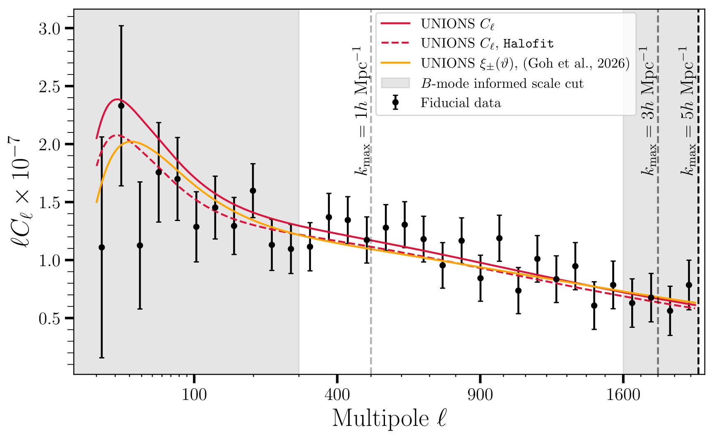
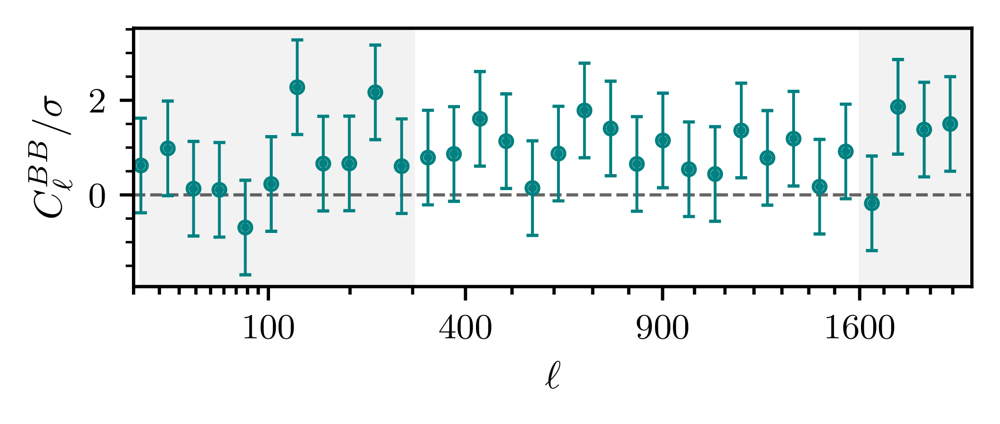
A CCD-scale feature localized in $\theta$
No $S_8$ tension! Yet…
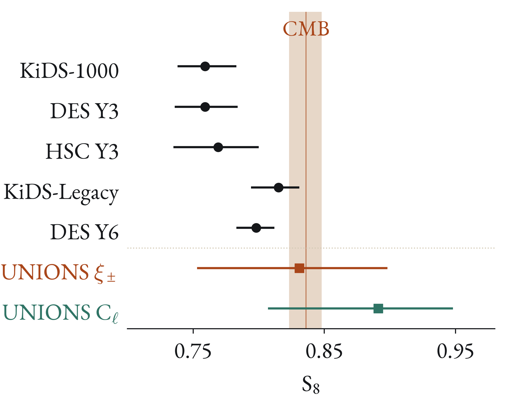
No tomography,
Intrinsic alignments ×2 Redshifts $\Delta z$ ×1.4 Shear calibration $m$ ×3
Squares — the two UNIONS results ($\xi_\pm$ and $C_\ell$); circles are the Stage III surveys of the consensus slide. Both UNIONS points sit within $1\sigma$ of the CMB and of Stage III.Why the error bars are wide — conservative nuisance priors. IA: $A_{\rm IA} \sim \mathcal N(0.83, 0.78)$, the measured width doubled (Calum's IA slides: the prior matters). Redshifts: $\Delta z \sim \mathcal N(-0.003, 0.018)$. Shear: $m = -0.057 \pm 0.0047$ from the sims, error tripled to $0.014$.Robustness — dropping IA moves $S_8$ by $-0.7\sigma$, a flat $A_{\rm IA}$ prior by $+0.4\sigma$; everything else by less than $0.4\sigma$ (backup slide).
Numbers Goh et al. 2026 ($\xi_\pm$): $S_8 = 0.831^{+0.067}_{-0.078}$. Guerrini et al. 2026 ($C_\ell$): $S_8 = 0.891^{+0.057}_{-0.084}$. If asked "why ×2, why ×3": IA width doubled because (1) galaxies with reliable redshifts used in direct IA measurements are bright, not representative of the red/blue populations, and (2) those measurements come from other surveys, and IA amplitude depends on shape algorithm (Singh+16) and band (Georgiou+19). m error tripled because three large effects in the image sims (including a WCS-propagation bug, Δm ≈ −0.02) were hard to disentangle and may not be captured exactly. The factors are judgement; the robustness runs (flat A_IA: +0.4σ; no IA: −0.7σ) bound what the choice does. The ×1.4 on Δz is the inflation Cail quotes (Moriond); Paper III states only the total ±0.018 (bootstrap plus a systematic term), not the factor. Priors from Paper III Table 2: IA width doubled to $\pm0.78$ ("These two reasons motivate the doubling…"); $m$ "multiply the uncertainty by a factor of 3"; $\Delta z$ total $\pm0.018$ = bootstrap + systematic (Papers III and IV state no ×1.4 explicitly; the Moriond talk said ×1.4).
New shape measurements have doubled our area; tomography is next
New shape catalog
Over 5000 deg² and 750 million objects
27 core-years in under three weeks (previous run: more than a year)
No comparable lensing measurements of this sky until Euclid DR3
Tomographic cosmic shear
Constraints competitive with Stage III and Year-1 Stage IV surveys
Multi-band image simulations progressingin Rust, targeting June 2027
Animation — the v2 production run, 10–27 October 2026: each DR6 tile lights up with the blinded mass map as its shapes complete.Plays once — and stops on the full footprint, about 5700 deg² of tiles before masking.
Area — the v2 bound-9 shape sample after masking; the 2D release had about 2400 deg² effective.Objects — every object ShapePipe measured on the 22,901 DR6 tiles of the first v2 production.Run time — wall-clock for a full catalog run, against about nine months for the catalog behind the 2D release.
Catalog first — the v2 catalog and its paper come first, and we intend to release the catalog fast.Tomographic paper — led by Klara Bertmann (Bochum); multi-band image simulations and a SOM $n(z)$ calibration feed it.What follows — where that stands today: the footprint, the redshift bins. Chart — completed area against time, live with the globe, from the production page (tile_history.json, 0.25 deg² per tile; media/fp/replay_globe.py, GLOBE_LAYOUT=deck): 10–27 October, 5,725 deg² of tiles, the last week doing most of it. The globe faces the main cap, swings to the smaller cap (RA ≈ 320°–40°) as it fills on 25–26 October, with the clock slowed 3× there, and swings back for the last of the main cap. Core-years from the page's per-day core-hours: 238,000 core-h ≈ 27 core-years. Say aloud: we plan to make the catalog public quickly.
Things are looking promising for our next release
Redshifts
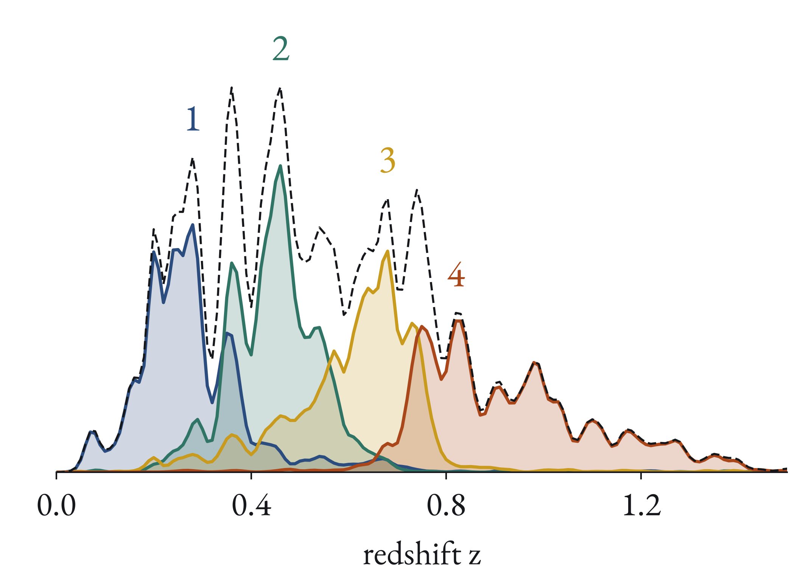
Four bins, BPZ + SOM: $\langle z\rangle$ = 0.29, 0.45, 0.61, 0.93
Shear calibration
Previous release: −5.7%
Estimates for our new run:
−0.6 ± 0.4% ShapePipe (Martin Kilbinger)
shear + selection response
+0.3 ± 0.8% AnaCal (Shurui Lin)
shear response
VERY PRELIMINARY
UNIONS: Weak lensing in the Northern sky
UNIONS is unique: sharp images over a large area of the northern sky,
Excellent spectroscopic overlap makes it ideal for cross-correlations
Our first cosmic-shear results released this spring
In parallel: a 3×2pt analysis with SPHEREx lenses calum.murray@cea.fr · cail.daley@cea.fr
Summary — then the team, then the mass map for questions.
First release · 2,900 deg² Next release · full area, blinded
Thank you!
The maps — two clips alternate, crossfading. First: the first-release MCALens convergence map (Paper I; unions_mcalens_nside2048…_e.fits, sparse + Wiener), about 2,900 deg², composited into the dusk sky over the Eiffel Tower (media/fp/METHOD_exact_kappa_northern_v2.md). Second: the v2 full-area Kaiser–Squires κ_E (nside 1024, 30′ smoothing) on the same sky — far more area, coarser structure.Questions — loops while questions run.Blind — divided by its own rms, so its amplitude carries no $S_8$ information.
$S_8$ is robust to analysis choices but sensitive to the IA prior
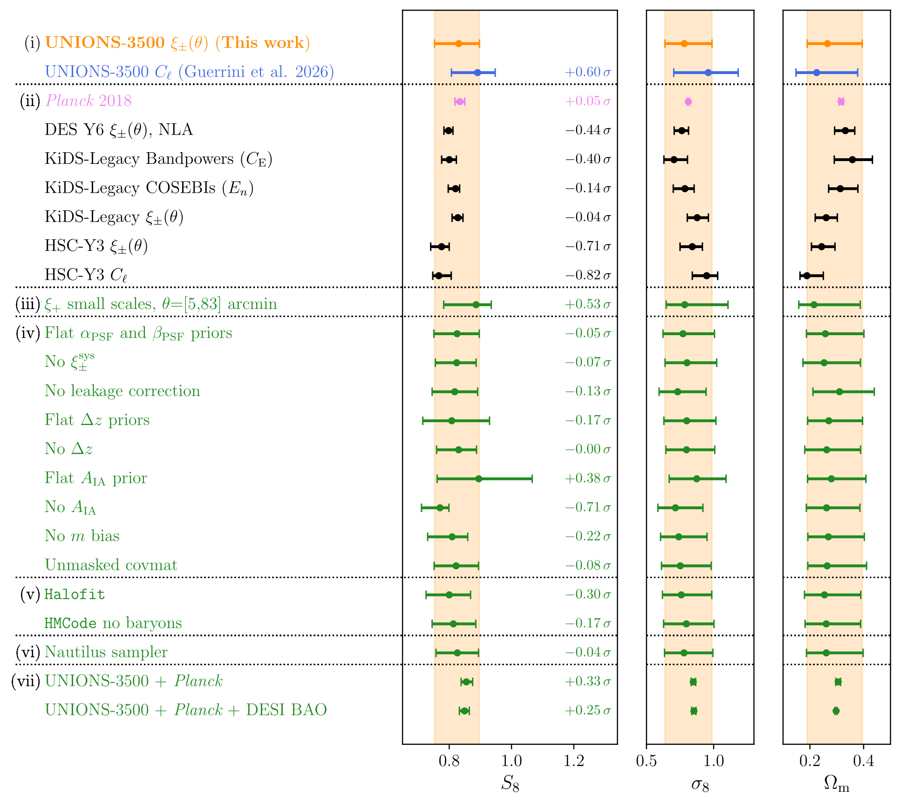
Goh et al. 2026
Most robustness tests shift $S_8$ by $\lt 0.4\sigma$
$A_\mathrm{IA}$ is the dominant nuisance: largely unconstrained, removing it shifts $S_8$ by $0.7\sigma$
UNIONS agrees with Planck and Stage III at about 1σ
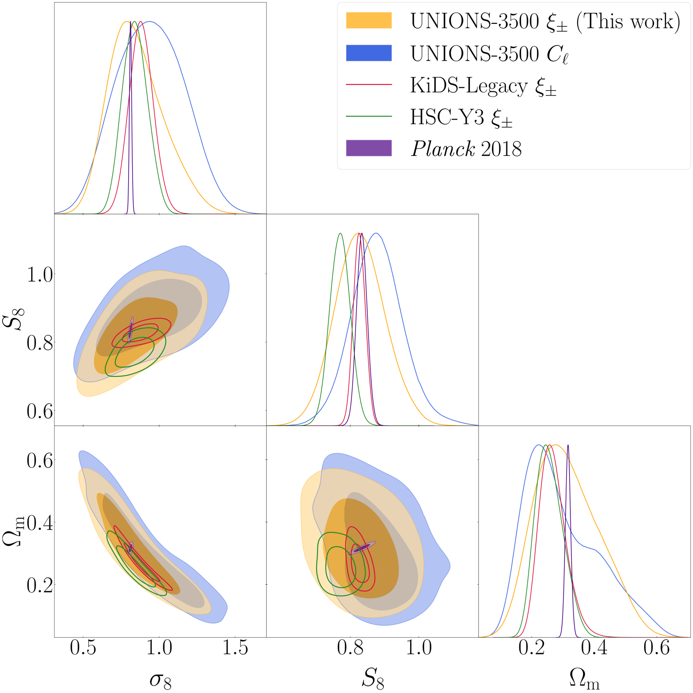
$\xi_\pm$: $S_8 = 0.831^{+0.067}_{-0.078}$
$C_\ell$: $S_8 = 0.891^{+0.057}_{-0.084}$
Goh et al. 2026
The two analyses agree to about 2σ, calibrated on GLASS mocks
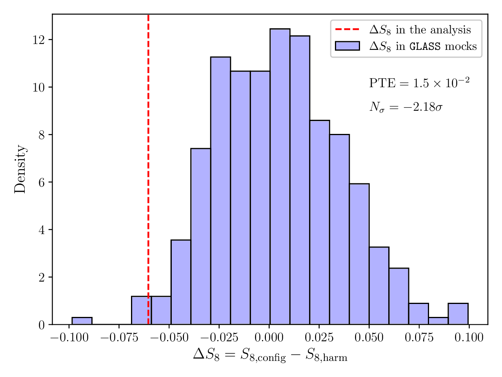
Same catalog, $n(z)$ and blinding: the mocks give the expected scatter between the two
$\Delta S_8 = -0.06$: 5 of 341 mocks lie further out (2.2σ)
About 1.9σ once the mocks' number density matches the data
$A_\mathrm{IA}$ is unconstrained by the data but strongly affects $S_8$
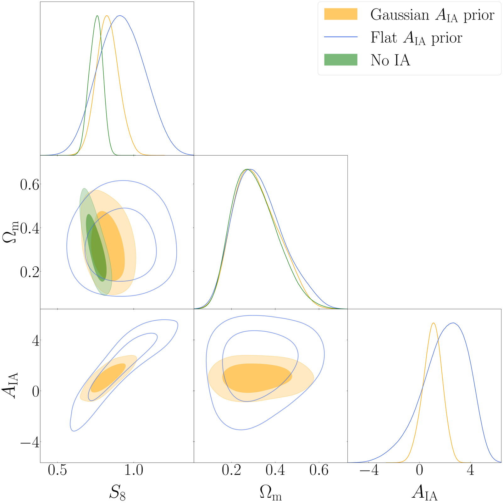
Gaussian $A_\mathrm{IA}$ prior (orange), flat prior (blue), no IA (green)
One redshift bin: $A_\mathrm{IA}$ follows the $S_8$ degeneracy
A lower $A_\mathrm{IA}$ gives a lower $S_8$; tomography breaks this
Goh et al. 2026
All analysis choices were fixed before unblinding
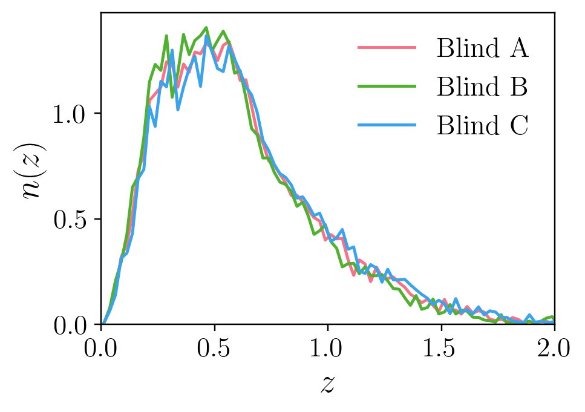
Three redshift blinds; B turned out to be real.
Blind by modifying $n(z)$: three realizations A/B/C, one unshifted
Catalog version, scale cuts and robustness criteria frozen before collaboration-wide unblinding
The cosmology-paper authors were inadvertently unblinded about two weeks early; no analysis choices changed after that
Full-area v2 error bars are about 0.7× the 2D release's
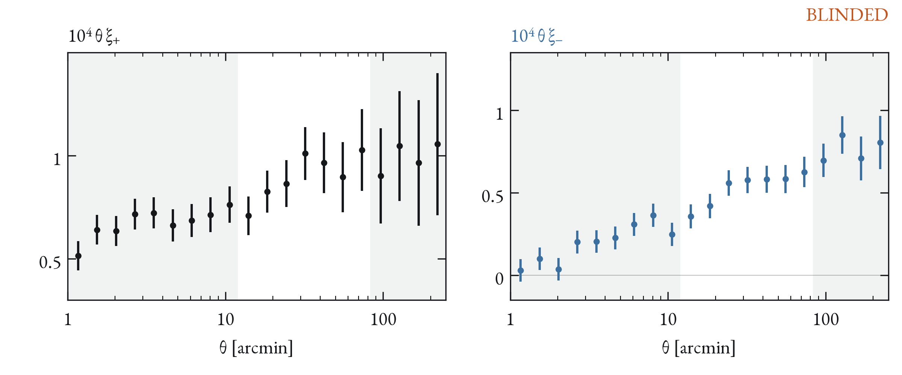
Concealed v2 $\xi_\pm$ with the 2D release's error bars
Full-area v2 error bars are about 0.7× the 2D release's
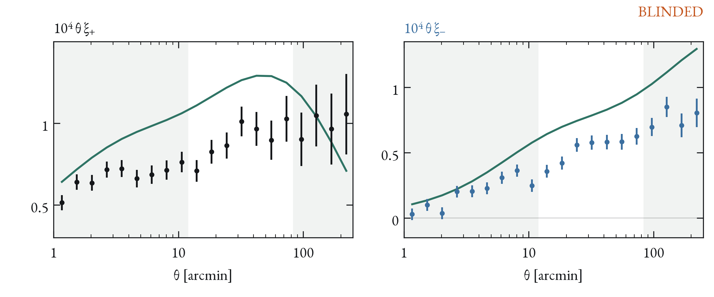
Concealed v2 $\xi_\pm$ with v2's error bars: 0.71× ($\xi_+$), 0.68× ($\xi_-$) inside 12–83′
3×2pt with UNIONS × SPHEREx lenses, narrower than DES Y6
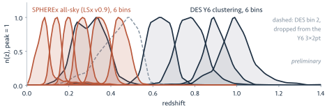
On the same timescale as tomographic cosmic shear
Calum Murray leads the UNIONS 3×2pt
Lens sample: SPHEREx redshifts (LSx v0.9), n(z) from DESI DR1 matches, against the DES Y6 lens bins (arXiv:2601.14559); each scaled to peak 1. Preliminary.
please add my photo here
Done: your photo (images/people/calum-murray.jpg) replaces the grey placeholder.
3×2pt slide (Calum: name it UNIONS × SPHEREx, the lens sample will move to UNIONS positions). Formerly a backup, added at Calum's request: the DESI Legacy Surveys × SPHEREx (LSx) catalogue's tomographic n(z) against DES Y6, from the UNIONS × SPHEREx deck (talks/2611_UNIONS_SPHEREx, fig/allsky/new/lsx_nz_desy6.svg).
Catalogue: SPHEREx forced photometry at 92 M Legacy Surveys positions, redshifts from SPHEREx alone; quality sample ~41 M galaxies, σ_NMAD 0.009 and ~1% outliers against DESI.
Figure: six z_est bins (0, 0.10, 0.16, 0.22, 0.30, 0.40, 0.50); n(z) = DIR from DESI DR1 BGS_ANY matches, each weighted by N_catalogue / N_truth in its (z_est 0.02 × r 0.25 mag) cell so the faint end counts; against the DES Y6 MagLim++ lens bins (arXiv:2601.14559, Fig. 2; bin 2 dashed, dropped before unblinding). Each scaled to peak 1: shapes and widths only.
Caveat: DESI stops at r ≈ 19.5; the reweighting assumes faint galaxies in a cell have the same true-z distribution as bright ones. In the 0–0.1 bin the weights move ⟨z⟩ from 0.080 to 0.104 (effective N ~7,500), so that bin's tail is uncertain. Preliminary: not a release number.